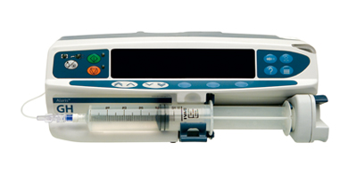
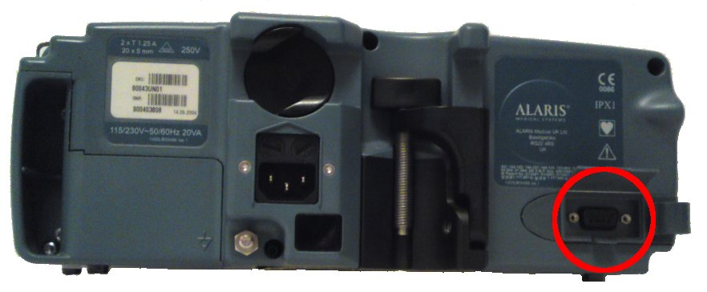

Supported devices: Alaris Asena Asena Syringe Pump (GS, GH, CC and TIVA models)
Release 1.10.0.0
Document reference: 1a
Known issues:
 
The driver supports the RS232 connection. Please read the following description carefully and ensure the cable in use matches the monitor.
Important: The serial circuitry of the Alaris pumps is powered from the client PC, and not
by the pump itself. The power is supplied through the RTS and DTR pins which are held at +5V. Therefore these
pins must be wired, and also the communication parameters must set dte="Yes", for instance for COM1;
Laptops and terminal servers which use RS232C serial ports may not provide sufficient voltage to power the pump's serial circuitry and communication
will not be possible.
The cable is a straight-through cable and should be wired as follows:
| Pump - Male DB9 connector | Signal Description | PC - Female DB9 connector | Signal Description |
| pin 3 | RxD | pin 3 | TxD |
| pin 2 | TxD | pin 2 | RxD |
| pin 5 | GND | pin 5 | GND |
| pin 4 | DTR | pin 4 | DTR |
| pin 7 | RTS | pin 7 | RTS |
The pump must be configured so that both Nurse Call and RS232 must be selected in the General Options (to enter General Options refer to the technical manual of the pump).
| Baud rate | 38400 |
| Parity | None |
| Data bits | 8 |
| Stop bits | 1 |
| Flow control | None |
| DTE | Yes |
| ID | Sources | Acronym | Common Term | Description | |
| Primary | 84:362:196:537 | KVO Rate | The default infusion rate for Keep Vein Open Rate (KVO). (Setting) Anaesthetists may use this predefined KVO Rate for convenience instead of changing delivery rate explicitly. | ||
| Sub | |||||
| Primary | 107:610:185:537 | Operational Status of the Pump | The operational status of the pump, e.g. Infusing, KVO, etc. See Pump Status Bitstring Table | ||
| Sub | |||||
| Primary | 81:622:196:537 | Infusion Time Remaining | The time calculated by the pump until time (or volume) for this step of flow elapses. | ||
| Sub | |||||
| Primary | 112:341:196:537 | Bolus volume | Programmed bolus volume. (Setting) Anaesthetists may use this predefined bolus for convenience instead of changing delivery rate and delivery time or volume each time | ||
| Sub | |||||
| Primary | 84:583:196:537 | Fluid delivery rate | Volume rate delivered by pump | ||
| Sub | |||||
| Primary | 107:825:840: | Alarm Alert | Alarm condition | ||
| Sub | 1076:913-925-1007:1053:1062 | Occlusion | Occlusion of fluid line | ||
| Primary | 107:825:840: | Alarm Alert | Alarm condition | ||
| Sub | 107:826:835:834-836 | Low battery | Warning, low battery | ||
| Primary | 107:825:840: | Alarm Alert | Alarm condition | ||
| Sub | 1076:899-1043:1053:1060 | Battery dead | Battery discharged or defective | ||
| Primary | 107:825:840: | Alarm Alert | Alarm condition | ||
| Sub | 107:826:835:834 | Powered by battery | Warning, the device is being powered by its battery | ||
| Primary | 94::185:537 | Operational Mode | The operational mode of the pump. See Pump Mode Bit String Table | ||
| Sub | |||||
| Primary | 112:333:821:537 | Volume Infused Actual Total | The volume infused by the pump since the last reset. | ||
| Sub | |||||
| Primary | 84:341:196:537 | Fluid bolus rate | High volume (flow) rate for bolus delivery. | ||
| Sub | |||||
| Primary | 107:825:840: | Alarm Alert | Alarm condition | ||
| Sub | 1076::1053:1060 | Equipment error | Unspecified device error | ||